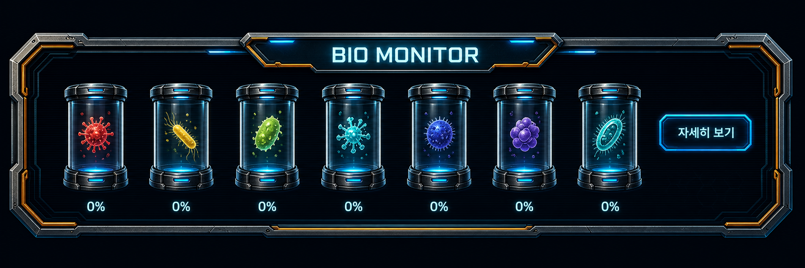

Core System
미생물 시스템
개요
미생물은 모든 곳에 존재하고, 각각을 평가하는 요소입니다.
환경, 손님, 판매 물건은 모두 미생물의 영향을 받으며, 미생물에 따라 상태와 가치가 달라집니다.
자세한 작동 방식은 왼쪽 메뉴의 하위 항목에서 나누어 정리합니다.
동시 작동 구조
미생물 시스템은 날씨, 손님, 판매 물건이 동시에 돌아가는 구조입니다.
보너스는 하나씩 따로 계산되는 것이 아니라, 현재 날씨의 미생물, 찾아온 손님의 미생물, 판매 물건의 미생물이 함께 맞물릴 때 결정됩니다.
| 요소 | 역할 |
|---|---|
| 날씨 | 현재 환경에 깔리는 미생물 속성을 정합니다. |
| 손님 | 손님이 선호하거나 반응하는 미생물 성향을 가집니다. |
| 판매 물건 | 상품 안에 들어간 미생물 속성으로 품질과 반응이 달라집니다. |
미생물 종류 7종
미생물은 총 7종으로 분류됩니다. 각 미생물은 고유한 속성과 감각 요소를 가지고 있으며, 환경, 손님, 상품을 평가하는 기준이 됩니다.
| 종류 | 색상 | 맛 | 향 | 평가 느낌 |
|---|---|---|---|---|
| 불속성 | 빨간색 | 매운맛 | 과일향 | 강하고 자극적인 성향 |
| 물속성 | 주황색 | 짠맛 | 식물향 | 부드럽고 안정적인 성향 |
| 전기속성 | 노란색 | 신맛 | 생선향 | 빠르고 민감한 성향 |
| 흙속성 | 초록색 | 단맛 | 물향 | 기초와 성장에 가까운 성향 |
| 공기속성 | 파란색 | 감칠맛 | 고기향 | 확산과 순환에 가까운 성향 |
| 빛속성 | 남색 | 지방맛 | 석유향 | 고급화와 에너지에 가까운 성향 |
| 기계속성 | 보라색 | 쓴맛 | 기계향 | 가공과 기술에 가까운 성향 |
BIO MONITOR

BIO MONITOR에서는 현재 미생물 상태를 확인할 수 있습니다.
7종 미생물이 각각 얼마나 적용되어 있는지 퍼센트로 표시됩니다.
플레이어는 이 퍼센트를 보고 오늘 어떤 미생물이 강한지 확인하고, 생산할 물건과 판매 전략을 정할 수 있습니다.
동작 원리
하루에 한 번 미생물이 바뀝니다.
미생물 7개를 주파수로 돌려서 그날의 TOP 3 미생물을 만듭니다.
| 단계 | 설명 |
|---|---|
| 1. 하루 시작 | 하루가 시작되면 미생물 상태가 새로 정해집니다. |
| 2. 주파수 계산 | 7종 미생물을 주파수 기준으로 돌려 그날의 TOP 3를 뽑습니다. |
| 3. 생산 버프 | 그날의 TOP 3 미생물과 맞는 물건을 생산하면 버프를 받습니다. |
| 4. 손님 분포 | 손님은 주파수로 뽑힌 TOP 3를 100%로 분할한 비율만큼 찾아옵니다. |
예를 들어 그날의 TOP 3가 불, 물, 기계 미생물이라면 손님도 이 세 미생물 비율에 맞춰 방문합니다.
플레이어는 그날의 TOP 3 미생물에 맞는 판매 물건을 준비해 생산 버프와 손님 수요를 동시에 노릴 수 있습니다.